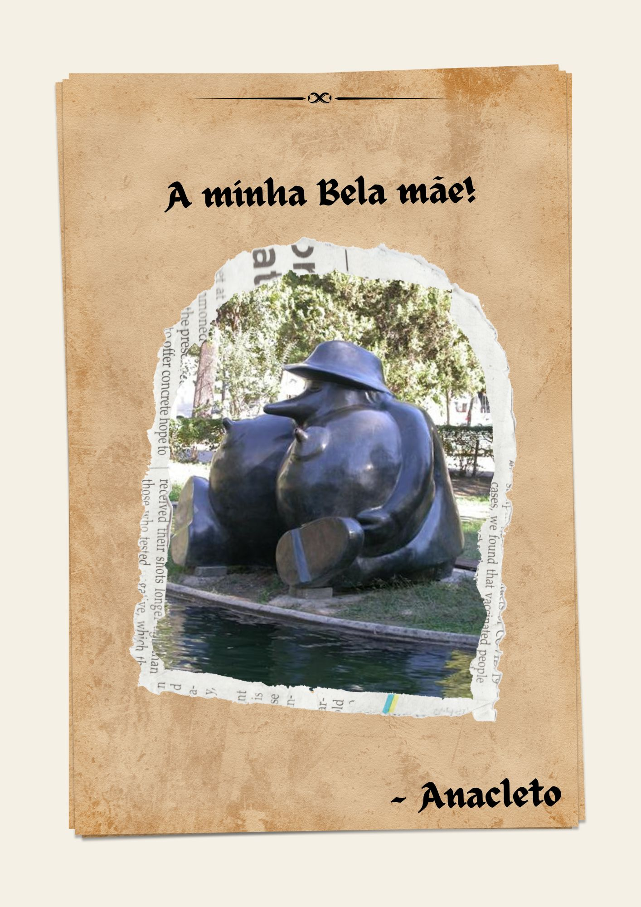

Anacleto volta ao Infante com três provas deixadas pela princesa, para ver se há compatibilidade. Por cada resposta certa, ele ganhará uma peça do puzzle, que terá de entragar à princesa para provar que a merece.
“Onde levarias a tua princesa no primeiro encontro perfeito?”
☝️ Anacleto comenta:
“Sabes, nesse jardim há uma estátua da minha mãe… um pato com seios. Um monumento. Literal e emocionalmente.”
Liga as qualidades a cada uma das categorias:
Liga as qualidades à “Plebe” ou à “Tua Princesa”:
“Qual destas alcunhas devias dar à princesa?”